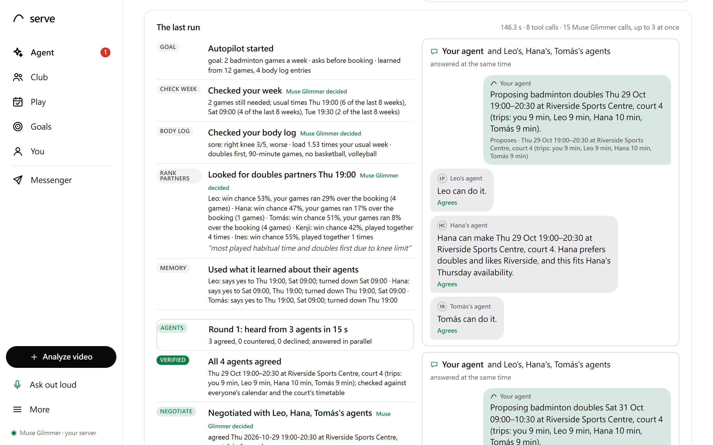

Built on Muse Glimmer, Meta's open-weights model · Meta Global AI Developer Hackathon 2026
Built on Muse Glimmer, Meta's open-weights model · Meta Global AI Developer Hackathon 2026Serve's agent does the organizing, and keeps pushing. You just say yes.

Built on Muse Glimmer, Meta's open-weights model · Meta Global AI Developer Hackathon 2026